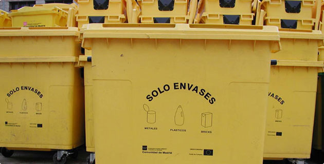

Objetivo
Llenar 10 contenedores de basura
- 
Martes 23/05 18:40hs
Silvio L. Ruggieri 2743, Palermo, Buenos Aires
Descripción
En la zona de Colegiales, cada vezhabitamos más vecinos, es una zona muy agradable la cual nos ha hecho sentir cómodos. Naturalmente, mientras más vecino somos, mayor cantidad de desperdicios producimos, desgraciadamente no siempre estamos concientes de que para que continuemos viviendo cómodos necesitamos cooperar cada uno de nosotros.
Este fin de semana estaremos trabajando en conjunto un grupo de vecinos con el objetivo de reducir desperdicios llenando 10 contenedores de basura, sumate a nuestra causa!

Comentarios